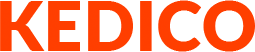

 케디코
대한민국 대표 언론사 한경닷컴이 만든 믿을 수 있는
암호화폐 · ICO 평가사이트
암호화폐공개(ICO)는 양날의 검과 같습니다. 지구 반대편에 있는 나라의 투자자로부터 쉽게 투자를 받을 수 있는 유용한 수단이 되어 주기도 하지만, 한편으로는 투기열풍을 이용해 악용되는 사례가 빈번하게 발생하기도 합니다. 실제로 뉴욕 Satis Group LLC의 연구 결과에 따르면 전세계 ICO중 81%가 사기라는 통계자료가 있습니다. 우리나라에서도 센트라 코인 사태 등으로 인해 수많은 피해자들이 양산된 사례가 있습니다. 지금의 ICO 시장에는 ‘옥석가리기’가 필요합니다. 투자자들을 기만하고 산업 발전을 저해하는 기업들은 퇴출 되어야 마땅하며, 제대로 된 기업들은 적극적으로 육성하고 힘을 실어 세계 경제에 이바지하도록 해야 할 것입니다.
이러한 취지에 의해 저희 한경닷컴은 ‘케디코’를 출범하게 되었습니다. 케디코는 세계 최초로 언론사가 만든 ICO 평가 플랫폼입니다. 국내외 유수의 블록체인 관련 기업들과 전문위원들이 모여 ICO 및 암호화폐를 다각도로 평가합니다. 한경닷컴은 ‘닷컴’이라는 이름에서 도 느껴지듯이 인터넷의 태동기와 닷컴 버블을 거쳐 성장한 기업입니다. 1987년 4월 한국경제신문사가 만든 한국 최초의 전자신문 케텔 (KETEL)에서 출발해 지금의 자리까지 왔습니다.
그리고 이제 한경닷컴은 대한민국 블록체인 산업 역사에서도 최초로 한 획을 그으려 합니다. 경제 신문의 비전은 산업을 올바른 방향으로 이끄는것이라고 믿습니다. 저희 한경닷컴은 케디코를 통해서 사기를 미연에 방지해 투자자들을 보호하고, 나아가 건전한 블록체인 산업 육성을 위해 최선을 다하겠습니다. 감사합니다.